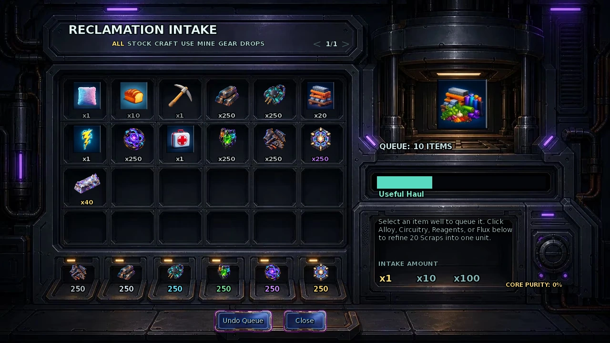
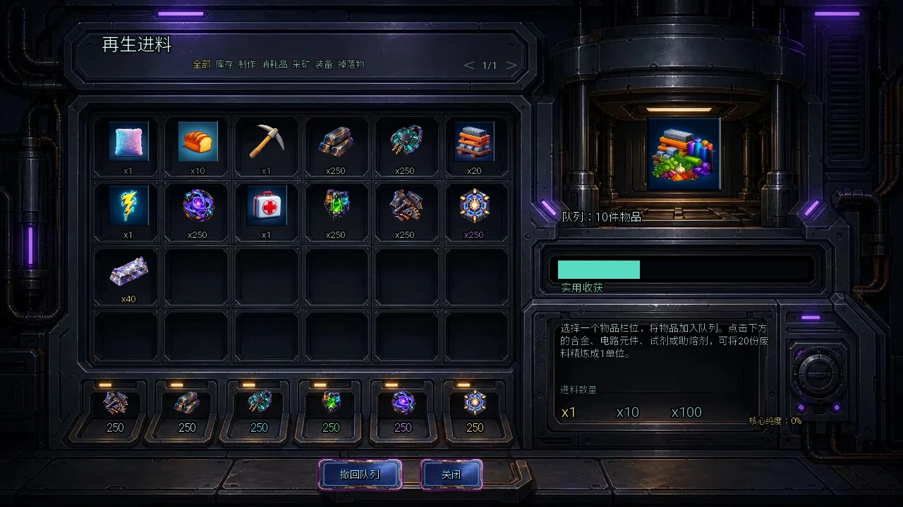

Select a screenshot to enlarge it. Screens show example inventories and progress.
Orchid’s Reclamation Bay turns surplus possessions into permanent fortress materials. Deposit only what you are prepared to lose, then process the queue with Orchid. Battle Salvage is a different resource and never becomes Bay stock automatically.
- Complete the room-opening and First Intake events, then open Use Reclamation Intake.
- Check an item’s other uses and recovery grade; use ×1 / ×10 / ×100 to deposit.
- Undo the whole queue before processing if needed. When ready, use Process Reclamation Queue with Orchid present.
Unlock route and Orchid’s schedule
- Complete Story Beat 34 and reach Acquaintance with Orchid (at least 50 affection). Visit Surplus Distribution 12:00–18:00 for The Overflow.
- Next, visit Engineering 08:00–22:00 for Room to Reclaim, opening the Bay room.
- Enter Reclamation Bay 08:00–20:00 for First Intake. The console becomes usable afterward. All three events require at least Acquaintance.
Reach the Bay from Operations. Travel and opening the console take zero minutes, and the console works without Orchid. After First Intake, she normally works in the Bay 06:00–24:00, except 12:00–18:00 every third calendar day, when she returns to Surplus Distribution. Processing, balancing and her Barrier Workshop still require her presence.
Depositing and Undo
The console filters All, Stock, Craft, consumables, mining, equipment and drops; compact labels vary by language. Click an item after choosing a quantity. The actual deposit is capped by eligible stock. Depositing immediately removes items from their original inventory, but does not convert them yet. High-value items require confirmation.
Undo Queue returns the whole unprocessed batch to its original inventories, not only the last item. Undo is unavailable once processing has begun. Ordinary saves retain the queue and material balances. Closing the console, leaving or changing day does not process anything automatically. New Game+ clears pending queues and processing results: process or Undo first. Already recovered materials and Core Purity remain retained.
Eligible sources include ordinary stock, three tiers of crafting materials/fabrics/ingredients, consumables, whole mining products, recoverable worker/maid equipment, spare monster tools, Infinity Dungeon drops and the six reclaimed resources. Use the console’s actual list: key and character-specific items are protected, one copy of each monster tool is reserved, and fractional mining progress is not a depositable whole item.
Eligibility does not mean an item is expendable. Quests, gifts, crafting, pickaxes and mining unlocks may still need the original item; the console does not reserve every future use for you.

Ordinary-item grades and returns
Each ordinary input contributes Scraps, an expected combined amount of the four specialist materials, Core Purity and a lucky-Core chance according to recovery grade. Specialist output means Alloy, Circuitry, Reagents and Flux combined, not that many of each.
Complete seven-grade return table
| Grade | Haul score | Scraps | Expected specialist units | Purity points | Lucky Core chance per unit |
|---|---|---|---|---|---|
| Residue | 1 | 1 | 0 | 0 | 0% |
| Common | 2 | 1 | 0.25 | 0 | 0% |
| Useful | 4 | 2 | 0.5 | 0 | 0% |
| Rare | 8 | 4 | 1.25 | 1 | 0.05% |
| Epic | 16 | 8 | 2.25 | 5 | 0.25% |
| Exotic | 32 | 12 | 3.5 | 15 | 1% |
| Masterwork | 64 | 20 | 5.5 | 35 | 5% |
The batch’s expected specialist output is pooled: whole units are guaranteed, while the fractional part becomes a chance for one extra unit. Allocation is random across the four materials, weighted toward lower current balances. Every 100 Purity points guarantees one Pristine Core; the remainder carries forward.
Lucky-Core chances combine across the whole batch and award at most one additional Core, separately from guaranteed Purity conversions. An active Luck Potion can provide its retry for that roll. Processing freezes its result; re-reading that result does not duplicate or reroll it.
Chronium’s special conversion
After Cid’s introduction, owned whole Chronium appears in Mine / All. Each piece retains the highest grade’s 20 Scraps and 5.5 expected specialist units, but replaces its normal Core contribution with 100 guaranteed Purity points and no lucky chance of its own. Each therefore guarantees one Pristine Core while preserving prior Purity remainder.
Chronium also funds Cid’s permanent Defenses and mining unlocks. Compare these uses before confirming; an unprocessed Undo returns the original mineral.
Processing and Orchid affection
Close the console and choose Process Reclamation Queue while Orchid is present. It needs a nonempty queue, takes 60 minutes and is available once per day, consuming the whole queue. Affection depends on the batch’s score, rather than clicks or a separate reward per item.
| Score | Haul tier | Base affection |
|---|---|---|
| 1–9 | Light Sorting | +1 |
| 10–39 | Useful Haul | +3 |
| 40–99 | Substantial | +6 |
| 100+ | Exceptional | +10 |
Affection is settled through Orchid’s ordinary relationship-action rules, so applicable relationship modifiers can change the final gain. A high-scoring queue still needs manual processing.
Scrap refinement, reprocessing and balancing
| Service | Cost and result | When useful |
|---|---|---|
| Scrap refinement | Click an Alloy / Circuitry / Reagents / Flux output well: 20 Scraps for one chosen unit, without using the daily processing action. | Target one known missing material. |
| Rebalance Salvage | With Orchid present and at least two combined specialist units, pays 2–10 random units total, bounded by stock, then divides the remainder as evenly as possible. Zero minutes, no affection; Scraps and Cores unchanged. | Correct a major imbalance; this loses part of the pool. |
| Reprocess stored resources | Deposit any of the six stored resources into the queue and process normally. Returns 50% of input value on average, not a guaranteed half-count. | Accept a loss for another resource mix, rather than endlessly cycling stock. |
If processing would leave strictly more than 500 Scraps, Orchid automatically refines the entire reserve and leaves zero Scraps. Each full group of 20 gives one specialist unit; the remainder provides a proportional chance for one more, allocated with the usual deficit weighting. Exactly 500 does not trigger it.
Complete reprocessing values and return rule
For reprocessing only, a Scrap is worth 1, each specialist unit 20, and a Pristine Core 2000. Of the retained half-value, 10% goes to Scraps, 20% to each specialist material and 10% to the Core lottery. Each fractional output independently becomes a chance for one extra unit. A batch can return above or below average; even one Scrap has a tiny Core chance.
Reprocessed resources do not also receive the ordinary-grade Scrap, specialist, Purity and lucky-Core recipe. They use this separate return rule.
Crafting and connected services
The Craft filter accepts existing crafting resources; it is not a recipe-crafting menu. Recycled materials, fabrics, ingredients or crafted gifts become Bay materials and can no longer serve their original crafting purpose.
EPOM’s Matter Displacer is a different balancing service: it needs at least ten ordinary crafting resources within one rarity tier, consumes 2–10 random units, then equalizes materials / fabrics / ingredients within each tier, losing integer-division leftovers. It does not balance Alloy / Circuitry / Reagents / Flux.
Orchid also provides barrier research and a Clout gift. Give Flowers uses one Flowers and ten minutes, up to three times per day for +3 base affection; it does not add processing runs. Follow her Objectives and character guide for dates and heart-to-hearts.
Current spending includes turret unlocks and upgrades, control research, both barrier tracks, all three grenade tracks, hero armor, Anthrax’s Training Efficiency and EPOM / Jinx Army-item trades. See TD Workshops and TD Army for exact costs.
Troubleshooting
- Console unavailable: finish First Intake, rather than only opening the room.
- Queue exists but processing is unavailable: check Orchid’s presence, current time and whether today’s run is already used.
- An item disappeared from inventory: inspect the pending queue and Undo before processing. If pickaxe storage cannot accept the whole batch, make room and retry; the queue remains intact.
- Fractional mineral stock cannot be deposited: only whole units qualify, with additional reserves for some tools and protected items.
- Ordinary crafting stock does not pay a research cost: it is a separate inventory; reclaim it or use targeted Scrap refinement.
- Scraps became zero: inspect automatic refinement if this batch took the reserve above 500.
- You queued Chronium or a gift you want to keep: Undo the unprocessed queue and select the desired inputs again.
Orchid 的再生工坊把多余物品转成要塞永久材料。先把愿意消耗的物品放入队列，再找 Orchid 处理。战场回收物是另一种资源，不会自动转进工坊库存。
- 先完成工坊开放与首次回收事件，再打开 使用回收入库台。
- 检查物品用途与回收等级，选择 ×1／×10／×100 放入队列。
- 处理前可以撤回整个队列；决定兑换后，找在场的 Orchid 使用 处理回收队列。
开放路线与 Orchid 的班表
- 完成主线节点 34，并让 Orchid 达到相识阶段（好感至少 50）；12:00–18:00 到剩余物资分配中心触发《满溢》。
- 之后 08:00–22:00 到工程室触发《留给再生的空间》，开放再生工坊房间。
- 再于 08:00–20:00 进入再生工坊，完成《首批入库》。此后控制台才可使用；三段都要求至少上述好感阶段。
从作战中心进入工坊，旅行和打开控制台都为 0 分钟；控制台不要求 Orchid 在场。首次回收后，她通常 06:00–24:00 在工坊，但每三天（日期能被三整除）12:00–18:00 会回剩余物资分配中心。处理、均衡资源和屏障工坊等本人服务仍要求她在场。
放入队列与撤回
控制台按全部、库存、制作、消耗品、采矿、装备与掉落物筛选；不同语言可能显示短标签。选择数量后点物品，实际放入数量以可用数量为上限。放入时立即从原库存扣除，但还没有转换成材料。高价值物品需要额外确认。
撤回队列会把整个尚未处理的批次退回各自原库存，不是只退最后一件。处理结果已经开始生成后就不能撤回。普通存档会保留队列与材料余额；关闭控制台、离开地点或换一天不会自动处理。新周目会清空待处理队列与未结算结果，开始前应先处理或撤回；已回收的材料余额与核心纯度会保留。
可回收内容包括一般库存、三档制作材料／布料／原料、可用消耗品、整件采矿产物、可回收的员工／女仆装备、多余怪物工具、无限地下城掉落，以及已回收的六种材料。以控制台实际显示为准：专属与关键物品有保护，怪物工具保留一份；不足一个单位的采矿进度不会显示为可投入整件。
能回收不代表现在就该回收。任务、送礼、制作、镐头和矿石解锁可能还需要原物品；界面不会替你保留所有未来用途。

普通物品的等级与回报
每件普通投入物按回收等级贡献废料、四种专门材料的合计期望数量、核心纯度和幸运核心机会。专门材料是合金、电路、试剂、助熔剂的合计，不是四种各拿这么多。
七个等级的完整回报表
| 等级 | 批次分数 | 废料 | 期望专门材料 | 纯度点 | 每件幸运核心机会 |
|---|---|---|---|---|---|
| 残渣 | 1 | 1 | 0 | 0 | 0% |
| 普通 | 2 | 1 | 0.25 | 0 | 0% |
| 实用 | 4 | 2 | 0.5 | 0 | 0% |
| 稀有 | 8 | 4 | 1.25 | 1 | 0.05% |
| 史诗 | 16 | 8 | 2.25 | 5 | 0.25% |
| 奇珍 | 32 | 12 | 3.5 | 15 | 1% |
| 大师级 | 64 | 20 | 5.5 | 35 | 5% |
整批专门材料期望先合计：整数部分保证获得，剩余小数变成多得一件的概率，再随机分配到四种材料，倾向补充当前较少的种类。每累计 100 纯度点保证一个完好核心，余数保留到下批。
幸运核心机会按整批合并，额外最多一个；它与纯度保证的核心分开。生效中的幸运药水可以为这次幸运判定提供重试。处理结果会固定保存，重新读取同一结果不会复制奖励或重掷。
时源矿的特殊兑换
Cid 介绍后，拥有的一整块时源矿会出现在采矿／全部列表。每块仍按最高回收等级提供 20 废料与 5.5 期望专门材料，但改为保证贡献 100 纯度点、不给自身的幸运核心机会，所以每块保证一个完好核心，并保留原有纯度余数。
时源矿也可用于 Cid 的永久防御设施和采矿解锁；先比较用途，再确认投入。未处理时可以撤回原来的时源矿。
处理队列与 Orchid 好感
关闭控制台，在 Orchid 在场时选择 处理回收队列。队列必须非空；每次花 60 分钟，每天最多一次，会一次消耗整个队列。好感由整批分数决定，不是按点击次数或物品数量逐个发放。
| 分数 | 批次评价 | 基础好感 |
|---|---|---|
| 1–9 | 轻量分拣 | +1 |
| 10–39 | 实用收获 | +3 |
| 40–99 | 大量 | +6 |
| 100+ | 卓越 | +10 |
这项好感通过 Orchid 的普通关系行动结算；最终加成以当前关系修正为准。未处理的队列不会因得分够高就自动完成。
废料精炼、重新处理与均衡
| 服务 | 花费与结果 | 适合用途 |
|---|---|---|
| 废料精炼 | 在控制台点击合金／电路／试剂／助熔剂的库存槽，20 废料换所选材料 1 个；不花处理次数。 | 明确缺某一材料时，直接指定目标。 |
| 均衡回收资源 | 找在场的 Orchid；四种材料合计至少 2 个，随机收 2–10 个总费用（不超过现有总数），再把余下总量尽量均分。0 分钟，不给好感；废料和完好核心不变。 | 四种库存严重失衡时；这是有损均衡，不会凭空增产。 |
| 重新投入库存材料 | 把六种库存材料重新放入队列，照常处理；平均只保留投入价值的 50%，不是保证返还一半件数。 | 愿意承担损耗来重新分配资源时；不适合无条件循环。 |
处理后废料总库存若严格大于 500，Orchid 会把整个废料储备自动精炼并归零。每满 20 废料保证一个专门材料，余数按比例判定再多一个；材料仍按补低库存的方式分配。刚好 500 不触发。
重新处理的完整估值与随机回报规则
只在重新处理估值中：废料价值 1；每个合金／电路／试剂／助熔剂价值 20；每个完好核心价值 2000。保留的一半价值再分为：10% 废料，四种专门材料各 20%，10% 核心。各项小数独立转为额外一个的概率；单批可能高于或低于平均值，连一废料也有极小核心机会。
重新投入的库存材料不会再额外领取普通回收等级配方的废料、专门材料、纯度与幸运核心；它们使用这套单独算法，避免把损耗兑换误看成增殖配方。
制作与其他服务怎么衔接
制作筛选页是让你投入现有制作资源，不是在回收台上制作成品。把原材料、布料、原料或已制作礼物回收后，它们会变成工坊材料，不能再作为原来的制作材料使用。
EPOM 的物质置换服务是另一套均衡：至少一个稀有度档内有合计 10 个普通制作资源，随机消耗 2–10 个，再在每档内均分材料／布料／原料；整除余数也会损失。它不均衡这里的合金／电路／试剂／助熔剂。
Orchid 的其他工坊服务包括屏障研发与声望礼物。花卉礼物需要一份鲜花与 10 分钟，每天最多三次，基础好感 +3；不是处理队列的额外次数。个人约会与倾心交谈沿她的目标和角色指南推进。
材料的当前支出包括炮塔解锁与升级、控制研发、屏障两条研发、手榴弹三条研发、英雄护甲、Anthrax 的训练效率，以及 EPOM／Jinx 的军队物品兑换。详细价格见 TD工坊 与 TD军队。
常见问题
- 控制台打不开：先完成首次回收，而不只是开放房间。
- 有队列却不能处理：检查 Orchid 是否在场、今天是否已处理、以及当前时段。
- 物品突然不在原库存：检查待处理队列；未处理前可撤回全部。若镐头仓库不足以接回整批，先整理空间再试，队列会保留。
- 矿物余额有小数却不能投入：只有整件可回收，且某些工具或关键物品另有保留。
- 普通材料齐了却缺某种工坊材料：两者是不同库存；先回收或用废料指定精炼。
- 废料归零：若本批使储备超过 500，查看自动精炼结果。
- 不想消耗时源矿或礼物：处理前用撤回队列，把原物品退回再重新选择。
Adapted and updated from the community Chronoromancer Wiki. Community source and history · CC BY-SA 4.0. Game images © Chronoromancer Studio.